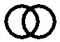
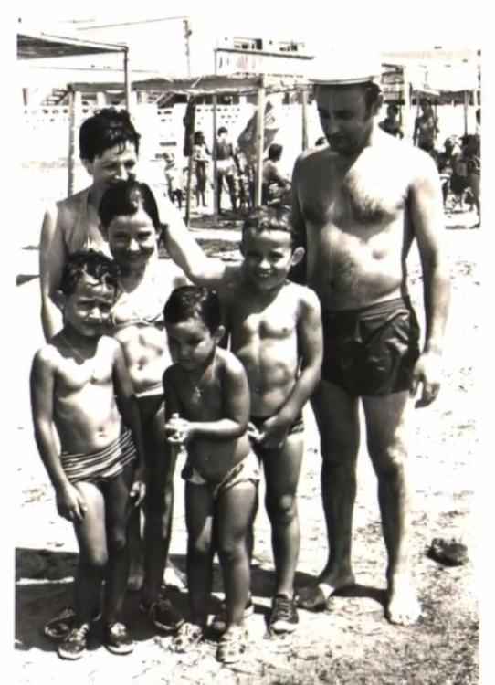

ARBOL DE LA VIDA
Santi
Ana Rosa Álvarez Rojo
Ana Rosa Álvarez Rojo
20/11/1968 Vitoria (57 años)
Santiago

Rosalina
Hermanos
1.
Ana Rosa
20/11/1968 Vitoria (57 años)
2.
Santiago
16/4/1970 Vitoria (56 años)
Berta
3.
María Victoria
7/12/1971 León (54 años)
4.
Marta
15/7/1973 León (52 años)
Ricardo
Fotos
muchos primos
1975 (6 años)
Lourdes
Cristina
Marta (1 año)
Félix
Inés
José Antonio
Rosalina (33 años)
María Elena
Elena
María Victoria (3 años)
Mariano
Beatriz
Isabel
Maribel
Ana Rosa (6 años)
Santiago (4 años)
Tomás
Santiago (37 años)
Foto de Félix
En la playz
agosto 1978 · Los Narejos (9 años)

María Victoria (6 años)
Rosalina (36 años)
Ana Rosa (9 años)
Marta (5 años)
Santiago (8 años)
Santiago (41 años)